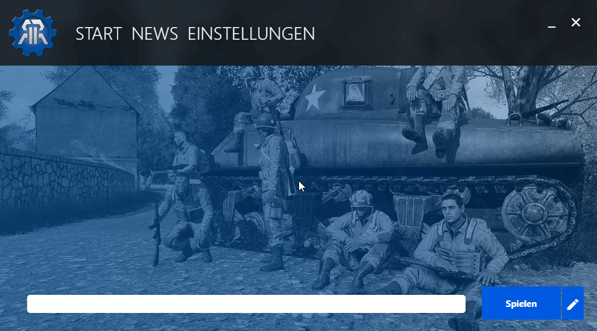

Einfaches und Intuitives Interface,
Einfache Administration für Nutzer und Administrator,
Einfaches System um so schnell wie möglich zu spielen.
Hiermit können viele verschiedene Modset Scenarios mit sehr wenig Speicherplatz realisiert werden.

Alle einstellungen, die zum spielen wichtig sind, können hier angepasst werden. Optionen, wie DLC's, etc. werden von der Community für die Modsets festgelegt.